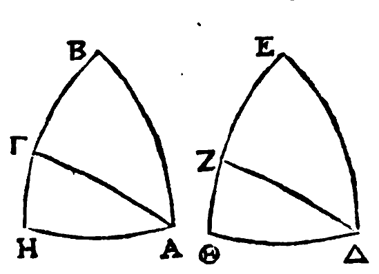

Prop. IV. Theor. (Halley 1758, pp. 5–6)¶
Menelai Alexandrini Sphaericorum Lib. I Prop. IV. Theor. (Halley 1758, pp. 5–6)


Enuntiatio (Halley 1758, p. 5)
Si in duobus triangulis Sphaericis angulus aliquis unius aequalis fuerit angulo alterius, arcusque qui continent aequales illos angulos fuerint aequales, singuli singulis; erunt duo reliqui arcus aequales. Quod si duo reliqui arcus fuerint aequales, erunt anguli ab aequalibus arcubus contenti in utroque triangulo aequales.
Sint duo triangula Sphaerica ΑΒΓ, ΔΕΖ; sitque angulus Β trianguli ΑΒΓ aequalis angulo Ε trianguli ΔΕΖ, & arcus ΑΒ aequalis arcui ΔΕ, arcusque ΒΓ arcui ΕΖ: dico arcum ΑΓ aequalem esse arcui ΔΖ.
Describatur polo Β, intervallo ΒΑ, arcus ΑΗ; & polo Ε, intervallo ΕΔ, arcus ΔΘ. Quoniam angulus Β aequalis est angulo Ε, & arcus ΑΗ descriptus est polo Β & intervallo eodem quo descriptus est arcus ΔΘ polo Ε; erit (per Coroll. 1. hujus) arcus ΑΗ aequalis arcui ΔΘ. Quoniam vero arcus ΒΓ transit per polum arcus ΑΗ, erit rectus super illum; pariterque arcus ΕΖ rectus erit super arcum ΔΘ: ob arcum autem ΒΓ arcui ΕΖ aequalem, & cum ΒΗ ipsi ΕΘ, (uterque enim aequalis fit ipsi ΑΒ) erit arcus reliquus ΗΓ reliquo ΘΖ aequalis. Jam quoniam ad rectos angulos insistunt, super diametros duorum circulorum aequalium, quorum arcus ΑΗ, ΔΘ segmenta, aequalia duorum circulorum aequalium, nempe arcus ΘΖΕ, ΗΓΒ continuati, & in utroque
segmento sumuntur aequales portiones dimidio eorundem minores, nempe arcus ΘΖ, ΓΗ; & in aequalibus circulis habentur segmenta aequalia ΑΗ, ΘΔ: erit recta jungens puncta Ζ, Δ aequalis (per 12mum II. Theod.) jungenti puncta Γ, Α; adeoque arcus ΖΔ aequalis arcui ΓΑ.
Quod si fuerit arcus ΓΑ aequalis arcui ΖΔ, erit angulus Β aequalis angulo Ε.
Demonstratio hujus est conversa praecedentis. Nam si arcus ΖΔ aequalis fuerit arcui ΓΑ, erit jungens puncta Ζ, Δ aequalis jungenti Γ, Α. Atqui arcus ΘΖ aequalis est arcui ΓΗ, quorum uterque rectus est super diametrum circuli cui insistit; circuli autem illi sunt aequales: quare (per 11mum II. Theod.) arcus ΘΔ aequalis est arcui ΑΗ, & proinde (per Coroll. 1mi hujus) angulus Ε angulo Β aequalis. Q. E. D.